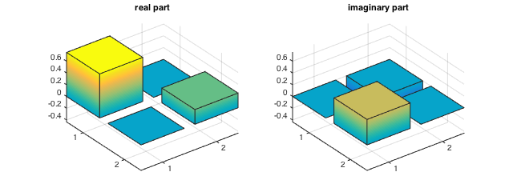

Tutorial on using qse_apg and qmt for quantum tomography
In this tutorial, we will go through some basic quantum tomography tasks, including computing probabilities using the Born rule. This tutorial presumes familiarity with quantum tomography and requires having the following files in the current directory or in your MATLAB path:
- qse_apg.m
- qmt.m
- proj_spectrahedron.m
- qse_cgls.m
- show_matrix.m
The HTML version of the tutorial was generated in MATLAB R2014b with the command publish tutorial, which takes several minutes to run and finishes once the Figure window is closed.
Contents
Born-rule probabilities of a single-qubit state
Let us first write down the identity and Pauli matrices.
identity = [ 1 0
0 1 ];
pauli_x = [ 0 1
1 0 ];
pauli_y = [ 0 -1i
1i 0 ];
pauli_z = [ 1 0
0 -1 ];
A simple qubit state can then be constructed as
rho_1qb = (identity+0.5*pauli_z+sqrt(3)/2*pauli_y)/2; show_matrix(rho_1qb);
rho = 0.7500 + 0.0000i 0.0000 - 0.4330i 0.0000 + 0.4330i 0.2500 + 0.0000i
We can describe a tetrahedron SIC-POM by specifying the four elements as combinations of the Pauli matrices. There are other ways to specify POMs, and we will explore several of them in this tutorial. For more info, please consult documentation for the function qmt.
tetrahedron = zeros(2,2,4); tetrahedron(:,:,1) = 1/4*(identity+( pauli_x+pauli_y+pauli_z)/sqrt(3)); tetrahedron(:,:,2) = 1/4*(identity+(-pauli_x-pauli_y+pauli_z)/sqrt(3)); tetrahedron(:,:,3) = 1/4*(identity+(-pauli_x+pauli_y-pauli_z)/sqrt(3)); tetrahedron(:,:,4) = 1/4*(identity+( pauli_x-pauli_y-pauli_z)/sqrt(3));
Now let us use qmt.m to compute the probability for each outcome.
probs_1qb = qmt(rho_1qb, tetrahedron); display(probs_1qb);
probs_1qb =
0.4472
0.1972
0.3028
0.0528
If all of the elements of the POM are rank one, as is the case for the tetrahedron POM, then we can also write the measurements as a set of kets. This doesn't make much of a difference in this particular case, but it eases memory storage requirements for larger POMs whose elements cannot be written as tensor products.
tetrahedron_kets = zeros(2,4);
tetrahedron_kets(:,1) = [sqrt(1+1/sqrt(3))/2*(1-1i)/sqrt(2)
sqrt(1-1/sqrt(3))/2];
tetrahedron_kets(:,2) = [sqrt(1+1/sqrt(3))/2*(1-1i)/sqrt(2)
-sqrt(1-1/sqrt(3))/2];
tetrahedron_kets(:,3) = [sqrt(1-1/sqrt(3))/2*(1+1i)/sqrt(2)
-sqrt(1+1/sqrt(3))/2];
tetrahedron_kets(:,4) = [sqrt(1-1/sqrt(3))/2*(1+1i)/sqrt(2)
sqrt(1+1/sqrt(3))/2];
We can also easily compute the Born-rule probabilities when specifying the measurement this way.
probs_1qb_kets = qmt(rho_1qb, tetrahedron_kets); display(probs_1qb_kets);
probs_1qb_kets =
0.4472
0.1972
0.3028
0.0528
Simulating quantum measurements
Given the list of Born-rule probabilities, we can simulate the outcomes of measuring N copies of the state.
N = 1000;
We have the option of setting a specific random number generator seed for deterministic random results in case the exact set of outcomes needs to be repeated.
rng(12345); % this is optional
Counts for each outcome can be generated using the histc function.
counts_1qb = histc(rand(N,1), [0; cumsum(probs_1qb)]); counts_1qb = counts_1qb(1:end-1); display(counts_1qb);
counts_1qb =
441
195
311
53
Quantum tomography of a single qubit from tetrahedron measurements
Now let us find the maximum likelihood estimator by running qse_apg on this data. Note that qse_apg requires the relative frequencies instead of the raw counts, i.e., we need to divide the raw counts by the total counts before passing them into qse_apg.
rho_1qb_mle = qse_apg(tetrahedron, counts_1qb/N); show_matrix(rho_1qb_mle);
rho = 0.7356 + 0.0000i -0.0104 - 0.4365i -0.0104 + 0.4365i 0.2644 + 0.0000i

We can compute the trace distance between the true state and the MLE using MATLAB's built-in functions.
trace_distance_1qb = 0.5*sum(svd(rho_1qb-rho_1qb_mle)); display(trace_distance_1qb);
trace_distance_1qb =
0.0181
Born-rule probabilities of a Bell state
Now let us move on to a two-qubit entangled state.
ket_2qb = 1/sqrt(2)*(kron([1;0],[1;0]) + kron([0;1],[0;1])); rho_2qb = ket_2qb*ket_2qb'; show_matrix(rho_2qb);
rho =
0.5000 0 0 0.5000
0 0 0 0
0 0 0 0
0.5000 0 0 0.5000
Suppose we perform a product tetrahedron measurement, namely a tetrahedron measurement on each qubit. This results in a 16-element POM, which we can create from the tetrahedron POM.
tetrahedron_2qb = zeros(4,4,16); for i=1:4 for j=1:4 tetrahedron_2qb(:,:,(i-1)*4+j) = ... kron(tetrahedron(:,:,i),tetrahedron(:,:,j)); end end
We can then use qmt to compute the Born-rule probabilities.
probs_2qb = qmt(rho_2qb, tetrahedron_2qb); display(probs_2qb);
probs_2qb =
0.0833
0.0833
0
0.0833
0.0833
0.0833
0.0833
0
0
0.0833
0.0833
0.0833
0.0833
0
0.0833
0.0833
Since these measurements are of product structure---each element of the POM is the tensor product of two elements of the tetrahedron POM---we can exploit this property to compute Born-rule probabilities more efficiently. To have qmt compute probabilities efficiently, we use a cell array instead of a multidimensional matrix to describe the POM. Here, measurements for the two qubits are conducted using the same POM, but any combination will work.
tetrahedron_2qb_factored = {tetrahedron, tetrahedron};
probs_2qb_factored = qmt(rho_2qb, tetrahedron_2qb_factored);
display(probs_2qb);
probs_2qb =
0.0833
0.0833
0
0.0833
0.0833
0.0833
0.0833
0
0
0.0833
0.0833
0.0833
0.0833
0
0.0833
0.0833
Quantum tomography of a Bell state
Now let's simulate measuring N copies of this state and reconstructing the maximum-likelihood estimator.
counts_2qb = histc(rand(N,1), [0; cumsum(probs_2qb)]); counts_2qb = counts_2qb(1:end-1); display(counts_2qb);
counts_2qb =
85
79
0
86
86
96
79
0
0
67
96
88
66
0
96
76
rho_2qb_mle = qse_apg(tetrahedron_2qb_factored,counts_2qb/N); show_matrix(rho_2qb_mle);
rho = 0.4931 + 0.0000i 0.0004 + 0.0110i -0.0150 + 0.0150i 0.4989 - 0.0219i 0.0004 - 0.0110i 0.0002 + 0.0000i 0.0003 + 0.0003i -0.0001 - 0.0112i -0.0150 - 0.0150i 0.0003 - 0.0003i 0.0009 + 0.0000i -0.0158 - 0.0146i 0.4989 + 0.0219i -0.0001 + 0.0112i -0.0158 + 0.0146i 0.5058 + 0.0000i
trace_distance_2qb = 0.5*sum(svd(rho_2qb-rho_2qb_mle)); display(trace_distance_2qb);
trace_distance_2qb =
0.0410
Eight-qubit state with product-Pauli measurements
Now let's consider an 8-qubit W-state mixed with the maximally mixed state.
ket_pure_8qb = zeros(256,1); ket_pure_8qb(2.^(0:7)+1) = 1/sqrt(8); rho_8qb = 0.9*(ket_pure_8qb*ket_pure_8qb') + 0.1*eye(256)/256; show_matrix(rho_8qb);
However, instead of using tetrahedron measurements, let us use Pauli measurements on each qubit.
pauli = zeros(2,2,6);
pauli(:,:,1) = (identity+pauli_x)/6;
pauli(:,:,2) = (identity-pauli_x)/6;
pauli(:,:,3) = (identity+pauli_y)/6;
pauli(:,:,4) = (identity-pauli_y)/6;
pauli(:,:,5) = (identity+pauli_z)/6;
pauli(:,:,6) = (identity-pauli_z)/6;
pauli_8qb = repmat({pauli},[1 8]);
Now let us compute the Born-probabilities.
probs_8qb = qmt(rho_8qb, pauli_8qb);
Since this is such a large matrix, let us measure a larger number of copies. We'll use100 copies per setting, similar to Haffner et al. Nature 2005.
N_8qb = 100*3^8; counts_8qb = histc(rand(N_8qb,1), [0; cumsum(probs_8qb)]); counts_8qb = counts_8qb(1:end-1);
Now let's find the maximum-likelihood estimator (and keep some statistics on the time taken!).
[rho_8qb_mle, stats_8qb_mle] = qse_apg(pauli_8qb,counts_8qb/N_8qb); show_matrix(rho_8qb_mle);
The trace distance can be calculated the same way as before.
trace_distance_8qb = 0.5*sum(svd(rho_8qb_mle-rho_8qb)); display(trace_distance_8qb);
trace_distance_8qb =
0.1162
There are many statistics kept in the MATLAB structure stats_8qb_mle. Some of the more important ones are:
- fvals - the normalized negative log likelihood (fval) per iteration
- times - cumulative seconds taken for each iteration
- satisfied_step - 1 if the algorithm converged
- satisfied_fval - 1 if the algorithm attained a desired fval
Here is a graph of the difference in log likelihood as the algorithm progresses, using information from stats_8qb_mle.
subplot(111); semilogy(stats_8qb_mle.times,(stats_8qb_mle.fvals-min(stats_8qb_mle.fvals))*N); xlabel('time (s)'); ylabel('difference in log likelihood from optimal'); snapnow;